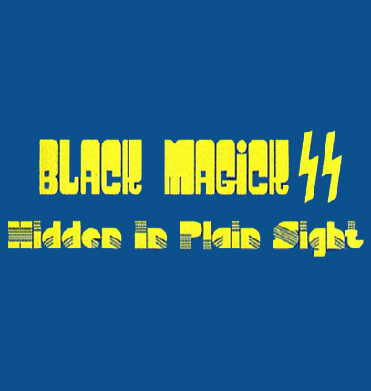
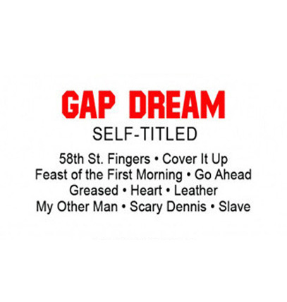
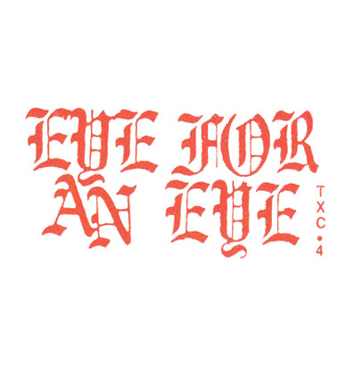
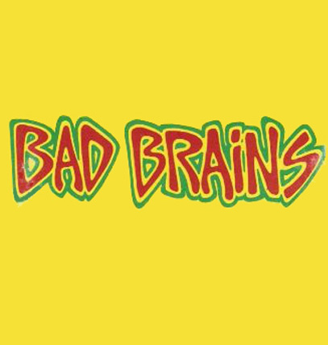
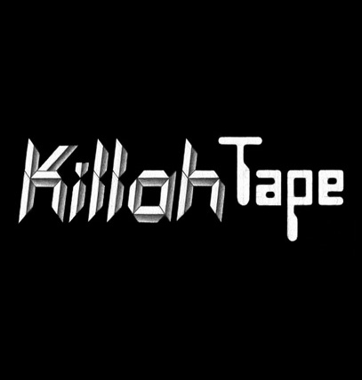
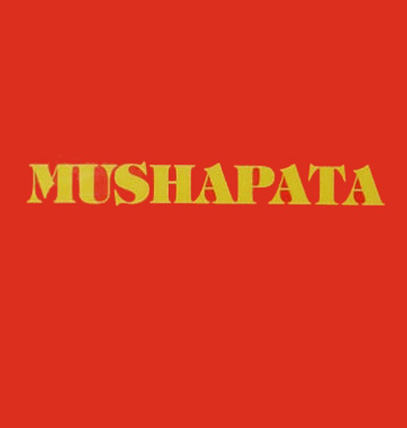

Deep Purple - Shades of Deep Purple, Year 1968 , Source Discogs.com
Deep Purple - Shades of Deep Purple, Year 1968 , Source Discogs.com
 Thee Oh Sees - Drop, Year 2014 , Source Discogs.com
Thee Oh Sees - Drop, Year 2014 , Source Discogs.com

Black Magick SS - Hidden in plain sight, Source Discogs.com
 Jimi Hendrix Experience - Are you Experienced, Year 1967, Source Discogs.com
Jimi Hendrix Experience - Are you Experienced, Year 1967, Source Discogs.com
Mad Professor - Psychedelic Dub, Year 1990 , Source Discogs.com
 Satan's Mercenaries - Assassination, 2020 , Source Discogs.com
Satan's Mercenaries - Assassination, 2020 , Source Discogs.com
 Christian Bland & The Revelators - The Lost Album, 2010 , Source Discogs.com
Christian Bland & The Revelators - The Lost Album, 2010 , Source Discogs.com

Gap Dream - Self Titled, 2012 , Source Discogs.com
DJ Lenin - First Vision, 1999 , Source Discogs.com
 Nico and The Velvet Underground - The Velvet Underground & Nico, 1967 , Source Discogs.com
Nico and The Velvet Underground - The Velvet Underground & Nico, 1967 , Source Discogs.com
 Black Flag - Live '84, 1984 , Source Discogs.com
Black Flag - Live '84, 1984 , Source Discogs.com
 Brody's Militia - Chainsaw Punk Hits, 2009 , Source Discogs.com
Brody's Militia - Chainsaw Punk Hits, 2009 , Source Discogs.com
 Muro - Ataque Hardcore Punk, 2017 , Source Discogs.com
Muro - Ataque Hardcore Punk, 2017 , Source Discogs.com
 Ramones - Ramones Mania, 1987, Source Discogs.com
Ramones - Ramones Mania, 1987, Source Discogs.com
 Emergenze - Incontrollabile Realta, 1989 , Source Discogs.com
Emergenze - Incontrollabile Realta, 1989 , Source Discogs.com
 Iggy Pop - Soldier, 1980, Source Discogs.com
Iggy Pop - Soldier, 1980, Source Discogs.com
 Gang of Four - 4.5 Fabrik, 1981 , Source Discogs.com
Gang of Four - 4.5 Fabrik, 1981 , Source Discogs.com

Corrosion of Conformity - Eye for an eye, 1984 (rereleased in 2012) , Source Discogs.com
 Cold Brats - Punk in the digital age Vol.1, 2019 , Source Discogs.com
Cold Brats - Punk in the digital age Vol.1, 2019 , Source Discogs.com
 The Mumbles - Raydean, 1989 , Source Discogs.com
The Mumbles - Raydean, 1989 , Source Discogs.com

Bad Brains - Bad Brains, 1982 , Source Discogs.com
 Gato Negro - Black Cat Dub, 1991 , Source Discogs.com
Gato Negro - Black Cat Dub, 1991 , Source Discogs.com
Roots Rock Reggae Compilation, 1976 , Source Discogs.com
 Bob Marley & the Wailers - Exodus, 1976 , Source Discogs.com
Bob Marley & the Wailers - Exodus, 1976 , Source Discogs.com
Jaemin Lee - God of Reggae, 2017 , Source Discogs.com
 Patra & Tony Rebel - Free Di youth/teach the children (Positively Reggae), 1994 , Source Discogs.com
Patra & Tony Rebel - Free Di youth/teach the children (Positively Reggae), 1994 , Source Discogs.com

Maffi - Killah Tape EP, 2015 , Source Discogs.com
 Gregory Issacs - Night Nurse, 1982 , Source Discogs.com
Gregory Issacs - Night Nurse, 1982 , Source Discogs.com
Negril Chill by Yellowman, 1990 , Source Discogs.com

Mushapata - Brakka Reggae: Generation Sacrifiee , Year unknown , Source Discogs.com